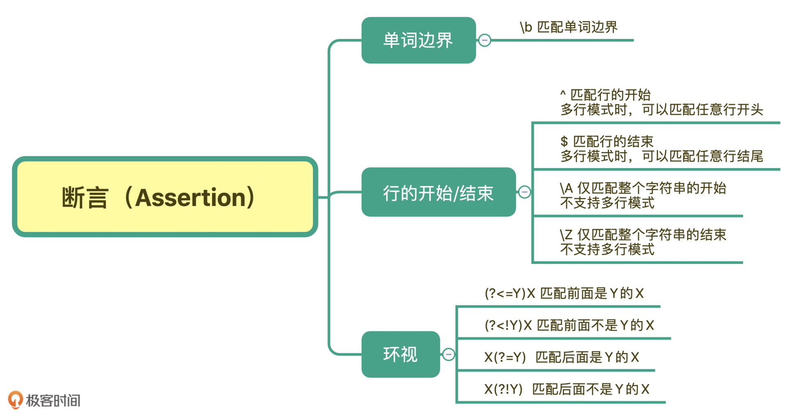

- 00 导读 余晟：我是怎么学习和使用正则的？.md.html
- 00 开篇词丨学习正则，我们到底要学什么？.md.html
- 01 元字符：如何巧妙记忆正则表达式的基本元件？.md.html
- 02丨量词与贪婪：小小的正则，也可能把CPU拖垮！.md.html
- 03 分组与引用：如何用正则实现更复杂的查找和替换操作？.md.html
- 04 匹配模式：一次性掌握正则中常见的4种匹配模式.md.html
- 05 断言：如何用断言更好地实现替换重复出现的单词？.md.html
- 06 转义：正则中转义需要注意哪些问题？.md.html
- 07 正则有哪些常见的流派及其特性？.md.html
- 08 应用1：正则如何处理 Unicode 编码的文本？.md.html
- 09 应用2：如何在编辑器中使用正则完成工作？.md.html
- 10 应用3：如何在语言中用正则让文本处理能力上一个台阶？.md.html
- 11 如何理解正则的匹配原理以及优化原则？.md.html
- 12 问题集锦：详解正则常见问题及解决方案.md.html
- 加餐 从编程语言的角度来理解正则表达式.md.html
- 结束语 使用正则提高你的人生效率.md.html
- 捐赠
05 断言：如何用断言更好地实现替换重复出现的单词？
你好，我是伟忠。今天我来和你聊聊正则断言（Assertion）。
什么是断言呢？简单来说，断言是指对匹配到的文本位置有要求。这么说你可能还是没理解，我通过一些例子来给你讲解。你应该知道 \d{11} 能匹配上11位数字，但这11位数字可能是18位身份证号中的一部分。再比如，去查找一个单词，我们要查找 tom，但其它的单词，比如 tomorrow 中也包含了tom。
也就是说，在有些情况下，我们对要匹配的文本的位置也有一定的要求。为了解决这个问题，正则中提供了一些结构，只用于匹配位置，而不是文本内容本身，这种结构就是断言。常见的断言有三种：单词边界、行的开始或结束以及环视。
单词边界（Word Boundary）
在讲单词边界具体怎么使用前，我们先来看一下例子。我们想要把下面文本中的 tom 替换成 jerry。注意一下，在文本中出现了 tomorrow 这个单词，tomorrow也是以 tom 开头的。
tom asked me if I would go fishing with him tomorrow.
中文翻译：Tom问我明天能否和他一同去钓鱼。
利用前面学到的知识，我们如果直接替换，会出现下面这种结果。
替换前：tom asked me if I would go fishing with him tomorrow.
替换后：jerry asked me if I would go fishing with him jerryorrow.
这显然是错误的，因为明天这个英语单词里面的 tom 也被替换了。
那正则是如何解决这个问题的呢？单词的组成一般可以用元字符 \w+ 来表示，\w包括了大小写字母、下划线和数字（即 [A-Za-z0-9_]）。那如果我们能找出单词的边界，也就是当出现了\w表示的范围以外的字符，比如引号、空格、标点、换行等这些符号，我们就可以在正则中使用\b 来表示单词的边界。 \b中的b可以理解为是边界（Boundary）这个单词的首字母。
根据刚刚学到的内容，在准确匹配单词时，我们使用 \b\w+\b 就可以实现了。
下面我们以 Python3 语言为例子，为你实现上面提到的 “tom 替换成 jerry”：
>>> import re
>>> test_str = "tom asked me if I would go fishing with him tomorrow."
>>> re.sub(r'\btom\b', 'jerry', test_str)
'jerry asked me if I would go fishing with him tomorrow.'
建议你自己也动手尝试一下，利用我们前面说的方法，在sublime text 3编辑器中实现一下这个替换操作，这样你才可以记得更牢。
行的开始或结束
和单词的边界类似，在正则中还有文本每行的开始和结束，如果我们要求匹配的内容要出现在一行文本开头或结尾，就可以使用 ^ 和 $ 来进行位置界定。
我们先说一下行的结尾是如何判断的。你应该知道换行符号。在计算机中，回车（\r）和换行（\n）其实是两个概念，并且在不同的平台上，换行的表示也是不一样的。我在这里列出了 Windows、Linux、macOS 平台上换行的表示方式。
那你可能就会问了，匹配行的开始或结束有什么用呢？
日志起始行判断
最常见的例子就是日志收集，我们在收集日志的时候，通常可以指定日志行的开始规则，比如以时间开头，那些不是以时间开头的可能就是打印的堆栈信息。我来给你一个以日期开头，下面每一行都属于同一篇日志的例子。
[2020-05-24 12:13:10] "/home/tu/demo.py"
Traceback (most recent call last):
File "demo.py", line 1, in <module>
1/0
ZeroDivisionError: integer division or modulo by zero
在这种情况下，我们就通过日期时间开头来判断哪一行是日志的第一行，在日期时间后面的日志都属于同一条日志。除非我们看见下一个日期时间的出现，才是下一条日志的开始。
输入数据校验
在Web服务中，我们常常需要对输入的内容进行校验，比如要求输入6位数字，我们可以使用 \d{6} 来校验。但你需要注意到，如果用户输入的是6位以上的数字呢？在这种情况下，如果不去要求用户录入的6位数字必须是行的开头或结尾，就算验证通过了，结果也可能不对。比如下面的示例，在不加行开始和结束符号时，用户输入了 7 位数字，也是能校验通过的：
>>> import re
>>> re.search('\d{6}', "1234567") is not None
True <-- 能匹配上 (包含6位数字)
>>> re.search('^\d{6}', "1234567") is not None
True <-- 能匹配上 (以6位数字开头)
>>> re.search('\d{6}$', "1234567") is not None
True <-- 能匹配上 (以6位数字结尾)
>>> re.search('^\d{6}$', "1234567") is not None
False <-- 不能匹配上 (只能是6位数字)
>>> re.search('^\d{6}$', "123456") is not None
True <-- 能匹配上 (只能是6位数字)
在前面的匹配模式章节中，我们学习过，在多行模式下，^和$符号可以匹配每一行的开头或结尾。大部分实现默认不是多行匹配模式，但也有例外，比如Ruby中默认是多行模式。所以对于校验输入数据来说，一种更严谨的做法是，使用 \A 和 \z （Python中使用 \Z） 来匹配整个文本的开头或结尾。
解决这个问题还有一种做法，我们可以在使用正则校验前，先判断一下字符串的长度，如果不满足长度要求，那就不需要再用正则去判断了。相当于你用正则解决主要的问题，而不是所有问题，这也是前面说的使用正则要克制。
环视（ Look Around）
《孟子·梁惠王下》中有一个成语“王顾左右而言他”。其中“王顾左右”可以理解成“环视”，看看左边，再看看右边。在正则中我们有时候也需要瞻前顾后，找准定位。环视就是要求匹配部分的前面或后面要满足（或不满足）某种规则，有些地方也称环视为零宽断言。
那具体什么时候我们会用到环视呢？我来举个例子。邮政编码的规则是由6位数字组成。现在要求你写出一个正则，提取文本中的邮政编码。根据规则，我们很容易就可以写出邮编的组成\d{6}。我们可以使用下面的文本进行测试：
130400 满足要求
465441 满足要求
4654000 长度过长
138001380002 长度过长
我们发现，7位数的前6位也能匹配上，12位数匹配上了两次，这显然是不符合要求的。
也就是说，除了文本本身组成符合这6位数的规则外，这6位数左边或右边都不能是数字。
正则是通过环视来解决这个问题的。解决这个问题的正则有四种。我给你总结了一个表。
你可能觉得名称比较难记住，没关系，我给你一个小口诀，你只要记住了它的功能和写法就行。这个小口诀你可以在心里默念几遍：左尖括号代表看左边，没有尖括号是看右边，感叹号是非的意思。
因此，针对刚刚邮编的问题，就可以写成左边不是数字，右边也不是数字的6位数的正则。即 (?<!\d)\d{6}(?!\d)。这样就能够符合要求了。
单词边界用环视表示
学习到这里，你可以思考一下，表示单词边界的 \b 如果用环视的方式来写，应该是怎么写呢？
这个问题其实比较简单，单词可以用 \w+ 来表示，单词的边界其实就是那些不能组成单词的字符，即左边和右边都不能是组成单词的字符。比如下面这句话：
the little cat is in the hat
the 左侧是行首，右侧是空格，hat 右侧是行尾，左侧是空格，其它单词左右都是空格。所有单词左右都不是 \w。
(?<!\w) 表示左边不能是单词组成字符，(?!\w) 右边不能是单词组成字符，即 \b\w+\b 也可以写成(?<!\w)\w+(?!\w)。
另外，根据前面学到的知识，非\w也可以用\W来表示。那单词的正则可以写成(?<=\W)\w+(?=\W)。
这个例子是为了让你有更多的思考，并不推荐在日常工作中这么来表示单词的边界，因为 \b 明显更简洁，也更容易阅读和书写。
环视与子组
友情提醒一下，前面我们在第三讲中讲过“分组与引用”相关的内容，如果忘记了可以回去复习复习。环视中虽然也有括号，但不会保存成子组。保存成子组的一般是匹配到的文本内容，后续用于替换等操作，而环视是表示对文本左右环境的要求，即环视只匹配位置，不匹配文本内容。你也可以总结一下，圆括号在正则中都有哪些用途，不断地去复习学过的内容，巩固自己的记忆。
总结
好了，今天的课就讲到这里。我来给你总结回顾一下。
今天我们学习了正则中断言相关的内容，最常见的断言有三种：单词的边界、行的开始或结束、环视。
单词的边界是使用 \b 来表示，这个比较简单。而多行模式下，每一行的开始和结束是使用 ^ 和 $ 符号。如果想匹配整个字符串的开始或结束，可以使用 \A 和 \z，它们不受匹配模式的影响。
最后就是环视，它又分为四种情况：肯定逆向环视、否定逆向环视、肯定顺序环视、否定顺序环视。在使用的时候记住一个方法：有左尖括号代表看左边，没有尖括号是看右边，而感叹号是非的意思。

课后思考
最后，我们来做一个小练习吧。前面我们用正则分组引用来实现替换重复出现的单词，其实之前写的正则是不严谨的，在一些场景下，其实是不能正常工作的，你能使用今天学到的知识来完善一下它么？
the little cat cat2 is in the hat hat2, we like it.
需要注意一下，文本中 cat 和 cat2，还有 hat 和 hat2 其实是不同的单词。你应该能想到在 \w+ 左右加上单词边界 \b 来解决这个问题。你可以试一下，真的能像期望的那样工作么？也就是说，在分组引用时，前面的断言还有效么？
多动手练习，思考和总结，你才能更好地掌握学习的内容。
好，今天的课程就结束了，希望可以帮助到你。欢迎在评论区和我交流。也欢迎把这篇文章分享给你的朋友或者同事，一起交流一下。
© 2019 - 2023 Liangliang Lee. Powered by gin and hexo-theme-book.